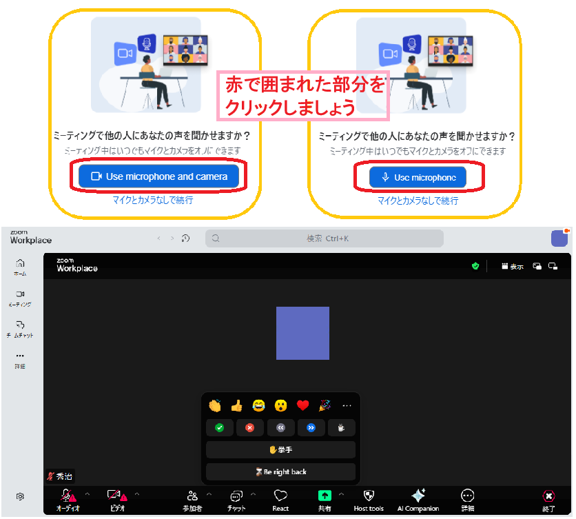
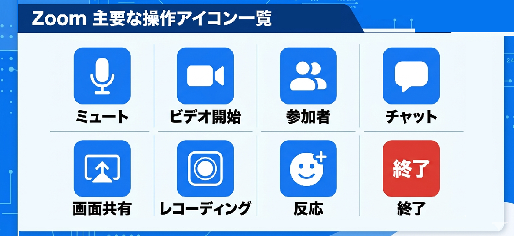

1-4_b. Zoom の確認ポイント
Zoom は、自分の映りを確認・調整できる「外見補正」や「低照度調整」が優秀で、
表情を明るく健康的に見せやすいです。
Zoom は、自分の映りを確認・調整できる「外見補正」や「低照度調整」が優秀で、
表情を明るく健康的に見せやすいです。
Zoom は、Web面接で使用されることの多いオンライン会議ツールです。
入室前に、マイク・カメラ・表示名が正しく設定されているかを確認しましょう。
面接中に慌てないよう、ボタンの位置や役割を事前に把握しておきましょう。


Zoom も Google Meet と同様に、面接直前に初めて触るのではなく、
事前に一度開いてどこに何のボタンがあるかを確認しておくことが重要です。
※この資料は2026年4月現在のものです。必要最新の状態を確認してください。